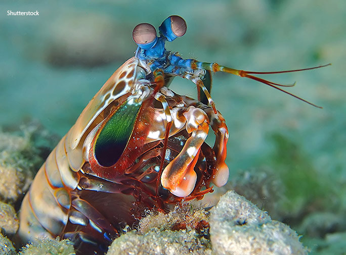

Fatos sobre o Stomatopoda
Ficha técnica
- Nome científico: Odontodactylus scyllarus
- Classificação científica:
Reino: Animalia Filo: Artdropoda Subfilo: Crustacea Classe: Malacostraca Subclasse: Hoplocarida Ordem: Stomatopoda
Descrição
O Stomatopoda vive em ambientes lodosos ou arenosos, cavando buracos ou se instalando em orifícios deixados por outros animais. Seu tamanho pode variar entre 15cm a 30cm de comprimento.

Super visão
Esse animal possui o mais complexo sistema de visão de cores do mundo animal. Seus olhos possuem 16 cones receptores de cores - para se ter uma ideia de quão incrível é isso, tenha em mente que nós, humanos, possuímos apenas 3 cones receptores de cores. Talvez isso explique suas cores exuberantes.

"Lagosta-boxeadora"
Apesar de sua impressionante beleza, não é a toa que o Stomatopoda recebe esse "apelido carinhoso". Ele é considerado um dos predadores mais violentos que existem. Possui um par de patas extra, instalado em frente ao corpo, que funciona tanto para defesa como para ataque. Um golpe desferido por esse animal pode apresentar a velocidade equivalente a um tiro calibre .22, o que equivale a 720km/h.
Referências
- Wikipedia, A enciclopédia livre. "Stomatopoda". Consultado em 23 de agosto de 2021.
- The Oatmeal. "Why the Mantis Shrimp is my new favorite animal". Consultado em 23 de agosto de 2021.
- Amino. "Stomatopoda". Consultado em 23 de agosto de 2021.